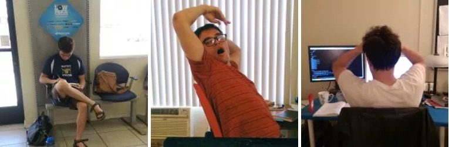

November Update!
Finally! We had already started planning the wedding before Ryan had proposed, but it was pivotal to advance our plans! We plan to get married in January! Long story short, he popped the question (just a formality) after a nice birthday dinner and surprised me with an engagement party thrown by my friends and family, too! I was laughing and crying and feeling confused for the rest of the night; it was awesome! I’m always in awe of how much God gives us… we have everything we need and He still gives us things we want and can enjoy. I’m confident that God will continue to provide everything we need as we seek His kingdom and lay up treasures in heaven (Luke 12:13-34)!
Ryan has been working non-stop on web development anywhere and everywhere! He’s studying programming books, trying out some projects, and learning from others. I think overall, there has been a good amount of progress, but I know it’s a longer-term investment that will take more time.

A huge blessing to us has been Ryan’s friend, Laney, who is a web developer working in Japan as a missionary with his family. Laney has been giving Ryan a few projects to get him started and more familiar with programming; it’s been so helpful for Ryan! Laney and his wife, Sarah, have 4 young children all under the age of 7! They are seeking to help grow and strengthen the Church through, discipleship, evangelism and teaching. Click here if you want to learn more about their work in Nagano, Japan!

- The reason Ryan is working to hard to become proficient at web development is so that if finances call for it, he can work in Cambodia to make missions feasible for us.
- We’ve been reading up on Cambodia’s history in general & the Khmer Rouge, specifically to get a fuller picture of how the people there have been impacted.
- Recently, we watched a movie about two journalists – a Cambodian and an American – during the time of the Khmer Rouge. It was very motivating and eye-opening, to say the least. We want to get to Cambodia faster than ever.
- We’re learning the Cambodian language, Khmer, with audio tools and apps. Ryan is utilizing these more, focusing on the alphabet.
- I was able to Skype with Christiana Wells (ACTION missionary in Cambodia) and got to hear about her experience of being in Cambodia for 7 years (!) as an American woman.
- For Ryan as he continues to study and work:
- His fingers have arthritis and although he’s been using the voice controls for most of it, which have been very helpful, his fingers are still affected by the work he can’t do using his voice, clicking, etc.
- He can get discouraged if he doesn’t see as much progress as he would like, so for perseverance and ultimately, trust in the Lord, not in his ability or desire to provide.
- As Ryan and I prepare for marriage, that we would seek to grow more in the roles that God has created for us. Also, for humility and patience! We hear those things are important! (;
- I just started a new job as a behavioral therapist and want to be a light to families and co-workers I interact with, to have a deep love and sense of urgency for them. Also prayer for balancing responsibilities well, so I can make time for my family and church!
- For the the Wells as they continue to minister to the Cambodian Church with their three kids as well as some health issues that have been surfacing.
Thank you for all your encouragement and prayers! We really are so overwhelmed.
“‘Even now,’ declares the Lord, ‘return to me with all your heart, with fasting and weeping and mourning.’ Rend your heart and not your garments. Return to the Lord your God, for he is gracious and compassionate, slow to anger and abounding love, and he relent from sending calamity.” Joel 2:12-13